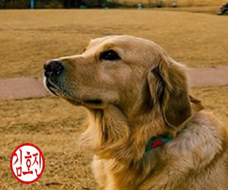
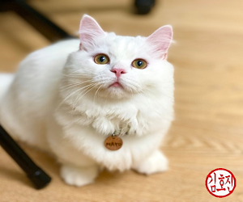

빌 게이츠(Bill Gates) 명언
우리는 앞으로 2년 뒤에 닥쳐올 변화에 대해서는 과대평가하지만 10년 뒤에 올 변화는 과소평가하는 경향이 있다. 그렇다고 스스로를 나태함으로 이끌지는 마라.
(We always overestimate the change that will occur in the next two years and underestimate the change that will occur in the next ten. Don't let yourself be lulled into inaction.)
강아지 : 골든 리트리버 (Golden Retriever)
부드럽고 화려한 황금색 털처럼 밝은 성격의 개

골드와 크림색이 있으며 구불거리며 단색인 털이 수수한 아름다움이 있다. 이중모의 구조기 때문에 봄에 속털이 빠지므로 이 시기에 솔질을 자주 해주어 빠진 털을 제거하여 피부병을 예방하고, 워낙 얌전한 개이므로 인위적인 운동을 시켜 비만을 방지해야 한다.
고양이 : 먼치킨 (Standard munchkin cat)
식육목(食肉目) 고양이과의 포유류로 미국에서 자연 발생한 종이다.

먼치킨은 중소형 고양이이며, 몸통이 길고 다리가 짧다. 완전히 자라면 2.2~4kg 정도의 무게가 나간다. 먼치킨은 짧은 다리 이외에 정해진 모색이나 무늬가 존재하지 않으며, 머리의 크기나 생김새 또한 조금씩 다르다. 기본적으로 광대뼈가 높으며, 귀는 끝부분이 다소 둥글고 눈은 호두 모양이다. 사교적인 성격으로 놀기 좋아하며, 호기심이 많고 장난감을 가지고 달리고 쫓기는 것을 좋아한다.